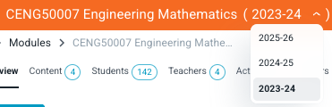

Content structure¶
Modules¶
Modules are the fundamental unit of content management in Lambda Feedback (not, for example, cohorts, or years/terms/semesters)
Instances of a module (e.g. '2026/27')¶
Instances of a module are independentent but share the same umbrella title to help organise content. A module with multiple instances will have a drop-down menu in the title bar where users can switch modules. If you do not see the drop-down then you do not have access to other instances (or there are no other instances).

Default instance when there are multiple¶
When opening a module in Lambda Feedback the default instance opens. The default is defined based on start and end dates for the instances. There are obvious cases such is if there is only one instance, or only one instance that is open and not closed. Logic for other cases is as follows:
| Case | Default instance |
|---|---|
| All instances closed in past | Most recent start date |
| All instances not started yet | Latest start date* |
| Multiple instances open | Latest start date |
* This logic seems incorrect, but as of 10/7/25 it was the behaviour of the system
The UX is based around the default being the most common need. In the rare case that access to a different instance is required, navigation is available.
Note that students rarely access multiple instances of a module; teachers rarely access previous/closed instances of a module.
Data continuity between instances¶
Instances are independent. New instances are created without students enrolled, submissions or events recorded, or comments. Student and teacher enrollments are independent between different instances.
Teacher roles¶
There are multiple Teacher roles, which are allocated per module instance. Admins manage the list of teacher roles available within a tenant. Each teacher role has a customised combination of privileges. One role always exists, which is 'Module Owner', which includes all privileges.
Enrolment¶
Access for students or teachers is controlled by enrollment, which is detailed in the getting started guide.
Sets¶
Set access is granted to all student users enrolled on a module instance, but the Set can be hidden by the teacher. Two methods can be used to hide a Set:
- Start and end dates (both optional) can be created in the Set Metadata.
- The Set can be manually hidden, which overrides the above settings.
Support material within questions¶
The following types of support materials are available to students in the help section:
- Structured tutorial
- Final answer
- Worked solutions
Two methods can be used to hide support material:
Configuring student access at the set level¶
Open the Edit Set Metadata page by clicking on the Edit Set Metadata button in the list of sets:

The page contains the Student access to support material section:

Access to each support material type can be set to one of the following options:
Available¶
Students can open this support material type without any restrictions.
This is valid for all questions in the set except those for which the support material access is set to be unavailable at the question level (see below).
Available with warnings¶
A warning window appears if the student opens the content before the recommended time.
The recommended time is the Minimum time estimate (mins) which can be set on the question Guidance page:

However, the option will be changed to Available, if any of the following is true:
- The student has downloaded the PDF
- The part is marked as done
- There is no minimum time estimate set for the question
- The time now minus the time the student first accessed the question is more than the minimum time estimate (the student has accessed the question for longer than the minimum time estimate)
This is valid for all questions in the set except those for which the support material access is set to be unavailable at the question level (see below).
Unavailable¶
Students cannot open any support material for any question in the set.
This is valid for all questions in the set, even those for which the support material access is set to Available at the question level (see below).
Configuring student access at the question level¶
The support material access configuration at the question level is located on the File tab:

All support material is available by default, it can be changed:
- If the switch is off, then the support material is available
- If the switch is on, then the support material is unavailable
Summary overview¶
| Set level setting | Question level setting | Result (using Final answer as an example) | Description | Comment |
|---|---|---|---|---|
| Unavailable | N/A |  |
The Final answer is disabled | The setting at the question level is ignored |
| Available | Unavailable |  |
The Final answer is disabled | |
| Available with warnings | Unavailable | |
The Final answer is disabled | The same result as above |
| Available with warnings | Available |  |
When the Final answer is clicked, a warning message appears | Additional conditions must be met: If any of them is not met, then the support material will be available with no warnings. |